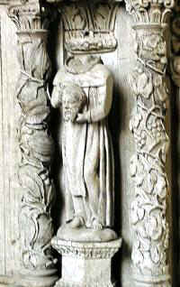

Saint Helier - Saint Hélyi - Saint Hélier

|
It is not just in Jersey that St. Helier is remembered and venerated. Churches and chapels can be found dedicated to the saint scattered across Normandy, and also in Eastern Brittany. La vénéthâtion d'St. Hélyi a 'té gardée hors Jèrri étout. Nou trouve d's églyises et des chapelles dans la grand'tèrre et en Brétangne. Y'a eune chapelle bein pus récente dans l'Êtat d'New Jersey, où'est qu'eune chapelle d'Saint Hélyi a 'té fondée dans la Cathédrale dé Trenton.
|
| Beuzeville | Bréville-sur-Mer | Coutances |
| Monhoudou | Omonville-la-Rogue | Querqueville |
| Rennes | Saint-Hellier | Saint-Ellier-les-Bois |
| Challain-la-Potherie | elsewhere - ailleurs |
Although Helier is revered as the holy man who became Jersey's own patron saint and whose name is to be found in many parts of the world, it was Marculf to whom the credit should be assigned of bringing Christianity to the Island. Apart from the former Maison St. Marculf in Green Street (The Limes), now under the care of Public Health, nothing else perpetuates the memory and yet it was he who founded the first monastic settlement in the Island.
Marculf died three years after Helier, and a medieval window in Coutances Cathedral shows him in a boat setting sail for Jersey, embracing St. Helier, and the three saints praying while the islanders fight the pirates. His relics are believed to have been finally laid to rest at Corbeny near Rheims, where they vied with the King of France in curing people afflicted with "the King's Evil", but Nantes also lays claim to them.
In the "Shorter Menology of the Cistercian Order", Claude Chalmot asserts that "the sacred relics of St. Helier are preserved and honoured religiously in the chapel of the Abbey of Beaubec in the Diocese of Rouen". Dean Falle supported this, but in recent years it has been discovered that the inhabitants of Bréville, in Normandy, have always believed that initially Helier's body was carried by the currents from Jersey and washed up on to their seashore.
The body was in a stone coffin, they say, presumably encased in wood to make it float, and when it was being carried up from the beach its weight became too much for the bearers and they had to let it drop. Where it fell, as will have been guessed, water sprang up, and to this day pilgrimages have been made to the Fontaine de St. Helier, the water from which is often used to bathe defective eyes.
Jersey Evening Post 18/7/1975
Bréville deviendra-t-il un pèlerinage pour nos cousins de Jersey?
Ils présentèrent l'église, l'un des plus vieux édifices religieux du diocèse, vénérable joyau roman des 11e, 12e, 13e et 15e siècles, en granit de Chausey, au fond du petit cimetière, dans son cadre de verdure. L'église abrite un Saint Hélier en bois du XVe siècle. M. Le Gresley, sculpteur Jersyais très connu, en a refait une merveilleuse réplique, et nous a annoncé son inauguration le 16 juillet dans l'église paroissiale de Saint-Hélier, jumelant ainsi spirituellement la capitale de l'île fleurie et la petite paroisse Brévillaise.
Nous avons pu consulter un vieux guide, intitulé "Guide pittoresque à l'Ile de Jersey ", imprimé à Londres par "Ward-Lock, and Co". On y lit ceci :
"Saint-Hélier capitale de Jersey est véritablement la seule place importante, à l'exception de Saint Aubin et de Gorée, tire son nom de Saint-Helerius, martyre du temps des barbares. (On sait qu'avec Saint-Marcouf, Heilig ou Helier, avait fondé un ermitage à Jersey). L'ermitage s'avance sur un rocher dans la baie près du château Elisabeth, il est au sommet d'une sorte d'escalier de marches rompues, creusé dans le roc. La hutte est dans un bon état de conservation. Le lit du saint creusé dans le roc, et son oreiller de pierre, sont montrés aux visiteurs qui peuvent marcher le long de la baie, lorsque le flot s'est retiré".
On raconte assez brièvement la légende de Saint-Hélier : Il était le fils de Sigebert, Franc austrasien et de Luzigard de Souabe, qui avaient désiré longtemps, vainement, un fils. Voué en conséquence au service de Dieu, il fut élevé par un prêtre nommé Cunebert, et enfin reclus. On rapporte de lui différents miracles, entre autres, ceux d'avoir rendu la vue à un aveugle et d'avoir fait sortir un serpent qui s'était introduit dans le gosier d'un homme endormi.
Par esprit de mortification il creusa deux trous à hauteur de genou, les remplit d'eau froide, mit au fond des pierres tranchantes et se tenait de bout sur elles jusqu'à ce que saignassent ses pieds gelés de froid. Il s'empêchait de tomber, soit en avant, soit en arrière, au moyen de planches bardées de pointes. Il resta 5 ans, se condamnant à une telle pénitence. Enfin, après que l'ermite eut, pendant des années, rendu le rocher où il vivait, fameux par ses bonnes oeuvres, arrivèrent dans ces parages des bâtiments montés par des Normands, "ces sauvages écumeurs de mer", contre lesquels ni les biens ni la vie n'étaient en sûreté. Ils débarquèrent, avides de pillage et de rapines, accueillirent avec des rires de mépris les avertissements d'Helerius, qui les exhortait à abandonner leurs mauvais dessins. Un de leurs chefs leva sa pesante hache d'armes et en assoma le saint ermite pendant qu'il plaidait pour les pauvres insulaires; mais un ouragan furieux s'éleva pendant la nuit, brisant sur les rochers les embarcations des pirates, qui, semblables à la vantarde armée de Sennachérib, n'étaient plus, le lendemain, que des cadavres.
Des siècles plus tard un noble Normand fonda l'Abbaye de Saint-Hélier en mémoire du martyr.
Il s'occupa activement de son apostolat. Un trait qui peut ajouter à la bonne opinion que nous avons de Saint-Hélier c'est que depuis la prétendue réforme du XVIe siècle, sa mémoire a continué à être en vénération dans l'île, dont la ville principale porte son nom, et que les légendaires, même protestants, montrent encore avec respect, près du château Elisabeth, le lieu qu'il habitait.
Une autre légende veut qu'un jour, on découvrit sur le sable, au bord de la mer, un lourd cercueil. On le hissa sur un chariot tiré par des boeufs. Ceux-ci le conduisirent à l'emplacement de l'église de Bréville... Une chose est certaine, c'est la dévotion des insulaires, et des Brévillais à l'égard du saint ermite.
La Manche Libre 11/7/1971
Saint Hélier
3 août
Ermite et martyr de l'île de Jersey, il aurait contribué à évangéliser l'île en compagnie de saint Marcouf. Les habitants paiens de Jersey le mirent à mort et jetèrent son corps à la mer.
Selon la légende, ce corps aurait été trouvé par un habitant sur la plage de Bréville-sur-Mer. On l'enterra dans l'église cependant qu'une source (jugée "miraculeuse") jaillissait dans le cimetière à l'endrolt précis où l'on avait pensé l'inhumer initialement. Aujourd'hui, le saint est censé guérir les enfants malades, chétifs ou rachitiques. Mais il a d'autres cordes à son arc. Il serait également souverain contre les maux d'yeux.
The spring of Saint Helier in Bréville-sur-Mer

Dans la Manche, le pèlerinage se fait à Bréville-sur-Mer (canton de Bréhal) où la fontaine Saint-Hélier, sorte de puits fermé, est surmontée d'une statue du saint. Un pèlerinage a lieu chaque année au mois d'août. Le curé dit la messe, bénit le pain qui est distribué aux fidèles. Par ailleurs des visiteurs se rendent encore à la fontaine, en principe à cause de leur vue déficiente. Ils puisent, lavent leurs yeux (ou les endroits malades de leur corps), adressent une prière. La fréquentation semble en régression.
Les Saints qui guérissent en Normandie Hippolyte Gancel 1998
|
|
|
St. Helier: A discovery
La Société Jersiaise finds new information as far north as Cherbourg
After many years of probing into the life and legends of St. Helier, it was assumed that there was not much more to be done. But life is full of surprises and research is never ending....
The final resting-place of his body has always been a matter of controversy. The most likely place could be at Beaubec, near Rennes, for two churches there bear his name; there is also one at Fruges, where the village spring is identified as the one that he was believed to have purified.
The strongest legend, however, is nurtured in the little village of Bréville, just about four miles north of Granville, where the inhabitants believe that his body was put into a heavy coffin and thrown into the sea. Currents carried it to the seashore of Bréville, from where it was carried inland. The weight caused it to be dropped and, inevitably, water sprang up which subsequently became the Fountain of St. Helier, to which is attributed healing powers.
Added to this legend are many others, but they are somewhat confusing and also attributable to other saints of that period. One makes reference to him as Bishop of Coutances and that he evangelized the Cotentin; in fact, in the little church there is a valuable tapestry depicting St. Helier with mitre and crozier, and of course the statue built into the reredos which was copied for St. Helier's Parish Church and is in the porch.
It now appears that St. Helier must have been revered in other parts of the Cotentin, for until recently nothing had been heard of him outside the area with which he had always been associated, and certainly not as far north as the Cherbourg peninsula. Recently, however, there was an archaeological expedition to Normandy by members of La Société Jersiaise and on his return Dr. A.E. Mourant was able to give some enlightening information.
To the north-west of Cherbourg and going about 7 km along the coast towards La Hague, there is the town of Querqueville with its dominant main church. Adjacent to this is the most interesting Chapelle St. Germain de Querqueville, which is shamrock-shaped; it dates from the 9th century but is based upon an earlier Celtic chapel of the 5th century. The curé is Père Bernard Le Blond, a keen archeologist who has written a small book about the chapel and its history entitled "Recherches en Spirale".
The antiquaries of the 19th century, he writes, have concerned themselves about the origin of the sanctuary of Querqueville. Moving away from the trefoil design of the chapel, they noticed a construction of a date earlier than the 5th century, and being none other than an ancient druidical temple re-adopted to Christian worship "at the time of the evangelization of the Cotentin".
Père Le Blond is a most accomplished and keen gentleman who goes into great archeological detail concerning the chapel, but unfortunately space cannot be provided to contain the bulk of his research. In dealing with the interior of the chapel mention is made of two statues of St. Denis, one of wood and one of stone.
He then goes on to say that in the north-east corner of the chapel one's attention is attracted to a statue of polychrome stone presumably from the hands of a 15th or 16th century sculptor. Instinctively, he says, one thinks of St. Denis... for this beheaded personage holds his head in his hands. St. Denis, no! At the foot of the holy man there is the name of "Helier" in Gothic lettering, recollecting that hermit from Jersey whose reputation for saintliness should not be omitted from being heralded in the sermons of the evangelization of the north Cotentin.
The curé goes on to describe the geographical position of Jersey, which, as an outpost in the sea to the west of the Cotentin, quickly acquired an importance with sailors from antiquity who were carrying on trade in metals with Great Britain. Jersey as a commercial staging post did not fail to create a crossroads of civilizations, to establish a mixture of religions and ideologies. Without any doubt, the Celtic creed was the most deeply implemented.
"The Christianization of Jersey was certainly not easy. Driven from their country or coming willingly, the British began this particularly delicate and dangerous undertaking. The saint who has been longest venerated is Marcouf, who evangelized the north of what is now the Island of Jersey. But the one who left the deepest and long-lived memory is undoubtedly his companion Helier, who brought the Gospel to the south of the same Island."
"Under the guidance of Marcouf, 'Patriarche of the monks of the Cotentin', as is shown by the lesson of the Office of Mattins of the Breviary of Coutances, Helier consecrated himself to the monastic life. Very quickly he felt that he was destined for the contemplative existence of recluses and led by Marcouf himself, settled in Jersey 'on a steep rock surrounded on all sides at the high tide' (text of the Breviary of Coutances)."
What follows is the story of Helier and his martyrdom which is so familiar to us all. After mention of Guernsey preserving the memory of Samson, of his nephew Magloire in Sark and who retreated to Herm (the Isle of the Hermits, where there is a chapel dedicated to one of the British Celtic saints), the writer concludes that "Jersey has not forgotten Helier, who has the honour of having left his name to the chief town of the transformed Island 'State of Jersey'. The martyred saint is commemorated in July in the Diocese of Coutances and in the islands."
Jersey Evening Post 25/9/1981
Chapelle Saint-Marcoul dans la Cathédrale de Coutances
Chapelle Saint-Marcoul - Lieu de pèlerinage jadis très fréquenté. On demandait à saint Marcoul la guérison des écrouelles (adénites tuberculeuses du cou). Saint Marcoul fut particulièrement honoré ici sous l'épiscopat de Monseigneur de Lesseville, au XVIIe siècle.
Résumé biographique: Issu de la colonie saxonne implantée à Bayeux (comme saint Evroul). Marcoul vivait au VIe siècle. Il fut le contemporain de deux évêques de Coutances : Possesseur et Lô. Le premier l'ordonna prêtre (en 522 ?). Il eut la faveur du roi de Neustrie, Childebert Ier, qui lui concéda le domaine de Nantus, dans le Cotentin, pour y bâtir un monastère. Il fut en relations avec saint Hélier, l'évangélisateur de Jersey. L'évêque Lô assista à ses derniers moments en 558. Ses restes jurent reconnus à Nantus en 659 par saint Ouen, évêque de Rouen, qui diffusa son culte. Lors des invasions scandinaves, les reliques de Marcoul furent portées à Corbény (Aisne). C'est là que commença sa carrière posthume de saint dynastique. Après son sacre à Reims, le nouveau roi allait en pèlerinage à Corbény, et ce n'était qu'après ce pèlerinage qu'il pratiquait pour la première fois le toucher des écrouelles. Selon la croyance populaire, le septième enfant mâle de mêmes procréateurs, sans interposition d'une fille, a des pouvoirs de guérisseur, notamment contre les écrouelles. On l'appelle un "marcou".
Plusieurs scènes du vitrail ont été refaites à l'époque moderne, Il conserve néanmoins des parties entières du XIIle siècle :
1. - Ordination de Marcoul par saint Possesseur, qui lui confère l'étole (réfection moderne).
2. - Marcoul, en costume d'abbé, prèche à la foule, à l'entrée de son monastère (réfection moderne),
3. - Marcoul guérit un enfant mordu par un chien enragé. L'enfant est tenu par son père.
4. - Le diable, déguisé en femme, tente Marcoul. Celui-ci l'ayant dépisté, le diable se précipite dans la mer.
5. - Déroute des pirates saxons venus attaquer l'île de Jersey. La tempête brise leur flotte. Leurs barques chavirent. L'une d'elles a une tête de dragon en figure de proue.
6. - Marcoul vogue vers Jersey dans une barque sans mât ni voile. La main de Dieu, au-dessus de l'embarcation, protège et guide les navigateurs.
7. - Rencontre de saint Marcoul et de saint Hélier (panneau moderne).
8. - Marcoul et ses compagnons en prières (moderne).
9. - Marcoul guérit un chasseur blessé en tombant de cheval (scène inspirée de l'histoire du lièvre dans la légende de saint Marcoul).
10. - Il reçoit de Childebert le territoire de Nantus. Le roi lui donne l'accolade. La reine Utrogothe assiste à l'entretien.
11. - Les derniers moments de Marcoul. Saint Lô est près de lui. Son âme est portée au ciel par un ange.
12. - Funérailles de saint Marcoul, présidées par saint Lô.
Art de Basse-Normandie 1987
In Monhoudou (Sarthe), there is a church, and an oratoire with a statue of the decapitated saint in the grounds of the Château de Courbomer (private property) which came from the former chapel. There is reference to a fontaine, but we have no information as to whether it still exists.
Statue of St. Helier in the oratoire in Monhoudou
photo de Didier van der Haeghen - http://www.saosnois.com

Statue of St. Helier in the Church of St. Helier in Monhoudou
photo de Didier van der Haeghen - http://www.saosnois.com
In Beuzeville (Eure), the church of Saint Helier is of C13th date, remodelled in the C16th and C19th. Most interestingly, there are fine C20th stained glass windows by François Décorchemont including a window depicting Helier on a coast with an island in the background on which is a chapel and some improbable pine trees. In the foreground is a ram and a stream , there is a boat in the water and Helier is surrounded by doves. At his side is a sword, symbol of martyrdom, rather than the more familiar axes. In the window are the words: Martyrs du Seigneur, bénissez le Seigneur - Les justes vivent de leur foi.
Stained glass window of St. Helier in Beuzeville
Church of St. Helier in Beuzeville
Chapel with healing spring in St.-Hellier (Seine-Maritime). See text and photos.
La fontaine dgéthisseuse dé Saint Hellier
There is a church of Saint Helier in Rennes in Brittany. The road the church stands in is Rue Saint-Hélier, or Straed Sant-Heler in Breton as can be seen on the bilingual street sign.

The church dates from the C15th. Behind the altar can be seen a statue of Saint Helier on the left, and of Saint Melaine on the right. (as at 2012, both statues are positioned to the left of the altar)

Mural (second half of C13th) of St. Helier in the church of St. John the Baptist in Omonville-la-Rogue (Manche)
Omonville-la-Rogue is in La Hague in the Cotentin peninsula (East of Cherbourg). It is interesting that this mural is to be found so close to Querqueville, and once more St. Helier is associated with another decapitated saint, as at Querqueville.
St. Helier is depicted twice in this mural - once holding his head, standing in a boat with two fish underneath; and alongside, again holding his head, under an arch.
Mèrcie bein des fais à Eric Leconte pouor ches portraits et d'l'înformâtion
Les deux porches flanquent la dernière travé de la nef, au nord et au sud - ce dernier fut amenagé au XVII siècle en chapelle des fonts.
Les greniers de ces porches s'ouvraient à l'origine sur une tribune voulue par l'architecte qui, pour cela, modifia son plan en cours de construction. Murés par la suite, ils conservent les enduits d'origine couverts de fresques éxécutées vers 1270 et relatant entre autres le martyre de St. Thomas Becket assassiné dans sa cathédrale de Cantorbéry le 29 décembre 1270 (calendrier normand) et deux scènes de la vie de St. Hélier.
Înformâtions d'l'Églyise d'Omonville-la-Rogue
The village of Saint-Ellier-les-Bois is situated in the département of Orne, a few kilometres North-West of Alençon. The name "Ellier" is clearly derived from "Helerius", and the local legend tells of Helier spending some time at this location, in connection with a spring, leading to the foundation of the village.
Information from the church noticeboard:
Son église: Elle se dresse au centre du bourg et elle est dédiée à Saint Ellier. Ce moine évangélisateur venant des Flandres et se dirigeant vers les îles anglo-normandes, s'arrêta quelque temps dans la région. Il s'établit certainement auprès de la source "d'en haut" ce qui permit vraisemblablement l'implantation du village qui se mit sous la protection spirituelle de ce moine-sourcier en s'appelant Saint-Ellier. Sanctus Helerius, attesté en 1092. Saint-Ellier en 1435. Ce n'est qu'en 1830 que la désignation "les Bois" a été ajoutée, peut-être pour faire oublier la période où, en l'an II, Saint-Ellier était devenu le Sarthon-Libre.
(Challain-la-Potherie, Loire-Atlantique)
Elle a donné son nom au jeu de boule de fort local. Sa statue trône au-devant d'un beau lavoir situé route de La Chapelle-Glain (Loire-Atlantique). Saint-Hélier, veille. Une halte s'impose.
Qui était Saint-Hélier ? Il est né à Tongres, dans une province belge non loin de Maastricht, probablement entre 510 et 520 après Jésus-Christ. A 7 ans il devient paralytique. Son père, Sigebert, le remet à un certain Cunibert, un chrétien, qui le guérit, et le baptise Hélier. Riche d'un enseignement religieux, il se signale par plusieurs miracles. La guérison des aveugles, l'enlèvement d'un serpent de la bouche d'un homme pendant son sommeil, et plus cocasse, la négociation avec les lapins qui détériorent son jardin, pour qu'ils partagent les légumes avec lui. Il s'enfuira vers l'île de Jersey après que son père a tué Cunibert, ne croyant plus aux miracles de son fils. Il donnera son nom à une ville de l'île. Avant il avait réalisé un long périple entre Tongres et la Normandie en empruntant les voies romaines. On signale son passage à Saint-Julien-de-Vouvantes et à Challain la Potherie.
Pourquoi sa statue à Challain ? La légende locale, rapportée dans les écrits d'un curé, Pierre Maussion, qui dirigea la paroisse de 1703 à 1746, raconte que durant une terrible sécheresse, une femme venue à la fontaine pour remplir sa cruche, ne trouva qu'une mare asséchée. A cet instant, un homme qui passait à cheval lui demanda « ce qu'elle cherchait ». La femme lui indiqua : « De l'eau » et que toutes les sources étaient taries. Le cavalier lui demanda de se rendre à nouveau à la fontaine : « Vous serez satisfaite. » La femme s'y rendant à nouveau constata que l'eau avait à nouveau jailli. C'est là qu'elle apprit que le cavalier se nommait Saint-Hélier.
Depuis cette époque la dévotion envers ce saint s'est répandue. On a fait construire en 1865 un lavoir, juste adossé à la statue. Il existe toujours aujourd'hui restauré, entretenu et fleuri.
A l'intérieur, les traces encore visibles de l'activité qui devait y régner. Une chapelle aurait été bâtie. L'emplacement exact n'a pas été identifié, pas plus que la date. On le fête le 16 juillet.
Ouest-France 24/7/2010
Tout autre renseignement au sujet de lieux associés avec le saint sera bien accueilli. Merci!
Autcheune aut' înformâtion entouor des pliaiches connectées auve St. Hélyi s'sa la beinv'nue. Mèrcie bein des fais!
Any other St-Helier related information, especially sites, gratefully received. Thanks!
R'tou à la page d'siez-mé | Back to home page
E-mail: geraint@societe-jersiaise.org